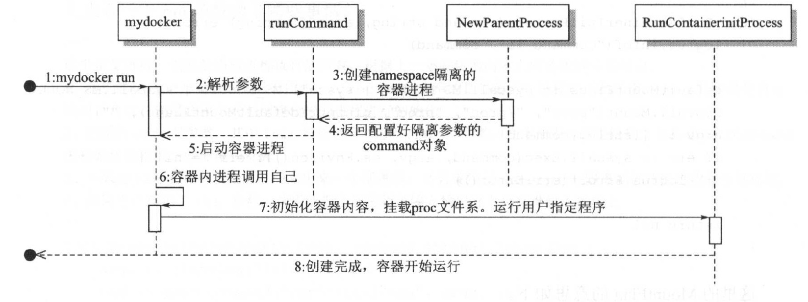
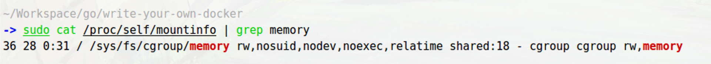
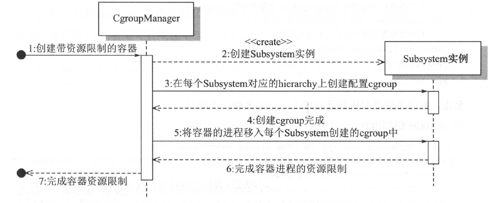
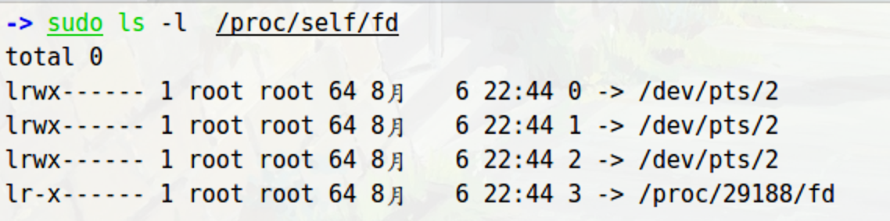
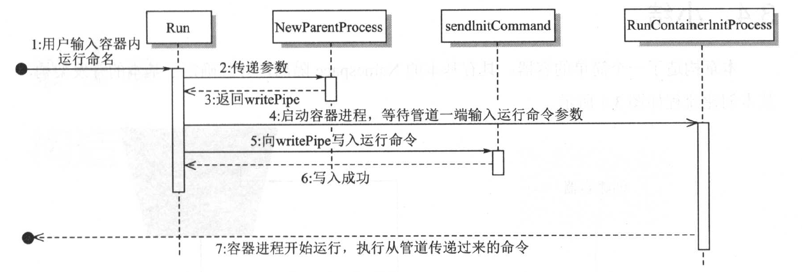

这是《自己动手写Docker》的读书笔记，本篇为第三章的笔记，主要的内容为如何使用GO语言构建一个简单的容器，实现进程隔离、资源控制
实验环境参数如下
- 虚拟机 Parallel14
- Ubuntu 16.04
- Linux内核 4.10.0-28-generic
- Golang v1.12.4
这本书从这一章开始就出现了大量的代码了，我也照着作者给出的代码手敲了部分，并对代码做了相应的注释，实现了在本地机器上的运行，我把代码上传到了Github上了schwarzeni/write-your-own-docker-learning
在这里就记录一些重点或者注意点吧。
Linux proc 文件系统
/proc 文件系统是由内核提供的，它并不是一个真正的文件系统，只包含了系统运行时的信息，只存在于内存中。列出这个目录下的文件，会发现有很多都是数字，这些都是进程的 PID
关于 /proc/<PID> 下的文件作用列举如下
| 文件路径 | 作用 |
|---|---|
| /proc/[PID] | PID为N的进程信息 |
| /proc/[PID]/cmdline | 进程启动命令 |
| /proc/[PID]/cwd | 链接到进程当前工作目录 |
| /proc/[PID]/environ | 进程环境变量列表 |
| /proc/[PID]/fd | 包含进程相关的所有文件描述符 |
| /proc/[PID]/maps | 与进程相关的内存映射信息 |
| /proc/[PID]/mem | 指代进程持有的内存，不可读 |
| /proc/[PID]/root | 链接到进程的根目录 |
| /proc/[PID]/stat | 进程的状态 |
| /proc/[PID]/statm | 进程使用的内存状态 |
| /proc/[PID]/status | 比前两者更具可读性的信息 |
| /proc/self | 链接到当前正在运行的进程 |
初步启动容器
对应在代码在 cpt3/cpt3-1-run 下。
1 | cpt3/cpt3-1-run |
在挂载proc之前有一个注意点，如果使用原书中的代码会出现问题。参看这里链接给出的解决方案。
systemd 加入linux之后, mount namespace 就变成 shared by default, 所以你必须显示，声明你要这个新的mount namespace独立。
需要做如下修改
1 | // container/init.go |
也是在这个函数中，声明时需要加一些参数
MS_NOEXEC本文件系统不允许执行其他程序MS_NOSUID不允许 set-user-ID 和 set-group-IDMS_NODEV默认参数
1 | // container/init.go |
最后还需要使用到 syscall.Exec，将当前进程的PID置为1。它调用了Kernel的 int execve(const char *filename, char *const argv[], char *const envp[])，覆盖当前进程的镜像，数据和堆栈信息
在 container/container_process.go 中，它还使用到了 /proc/self/exe 来调用自身来启动子进程
偷个懒直接截书上的图了，时序图如下

改进
这部分代码在 cpt3/cpt3-23-cgroup 下
1 | ├── cgroup |
使用CGroups来控制资源使用
先复习一下Cgroups的概念
| 术语 | 解释 |
|---|---|
cgroup |
hierarchy 中的节点，用于管理进程和 subsystem 的关系 |
subsystem |
作用于 hierarchy 上的 cgroup 节点，并控制节点中进程的资源占用 |
hierarchy |
将 cgroup 通过树状结构串起来，并通过虚拟文件系统的方式暴露给用户 |
先定义一下资源配置信息结构体
1 | // cgroup/subsystems/subsystems.go |
再定义一下通用的接口
1 | // cgroup/subsystems/subsystems.go |
这样，CpuSet、Memory、CpuSub 实现以上的接口就行了
还有一个问题需要解决：如果找到subsystem的挂载目录的绝对路径
比如说想要找到memory的，那么就在 /proc/self/mountinfo 中，如下

将其按照空格分割，需要的数据就在第5位，所以就有了如下的代码
1 | // cgroup/subsystems/util.go |
总的流程图如下

通过管道实现进程间通信
管道 为两个进程间通讯的一种方式，半双工通讯。它是Linux支持的IPC的其中一种方式。一类为无名管道 ，用于有亲缘关系的进程之间通讯；另一类为 有名管道，也叫 FIFO管道，是一种存在于文件系统中的管道。
管道是文件的一种，有一个固定的缓冲区，一般的大小为4K；当管道写满时，写进程阻塞；当管道为空时，读进程阻塞。
使用GO来创建一个管道
1 | // container/container_process.go |
随后使用 cmd.ExtraFiles将管道文件的文件描述符添加至子进程中，如下
1 | // container/container_process.go |
这样，子进程就可以使用如下方法来获得管道中的内容了
1 | // container/init.go |
由于进程默认携带三个文件描述符，如下图前三项

也就是stdin、stdout、stderr，所以 uintptr(3) 是获取其第四个文件描述符
整体的流程图如下
